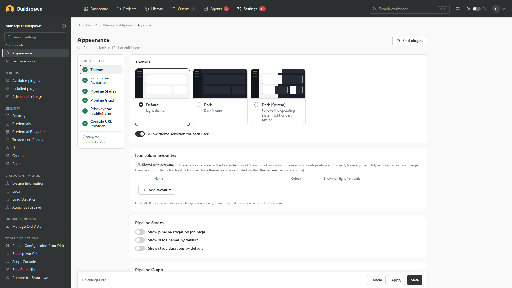
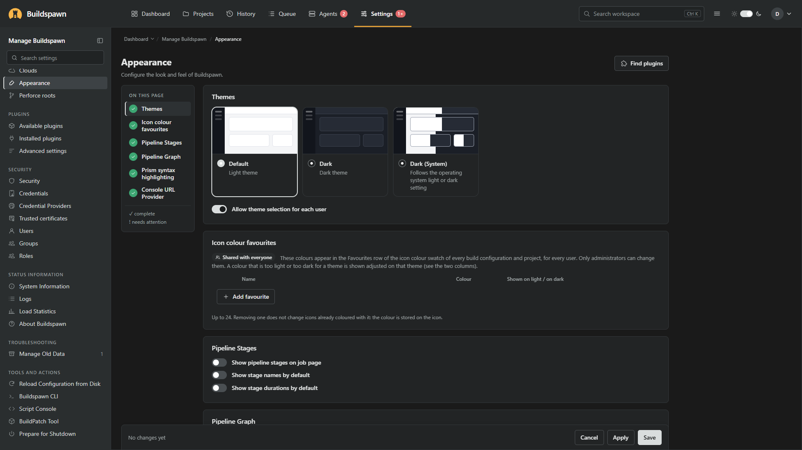
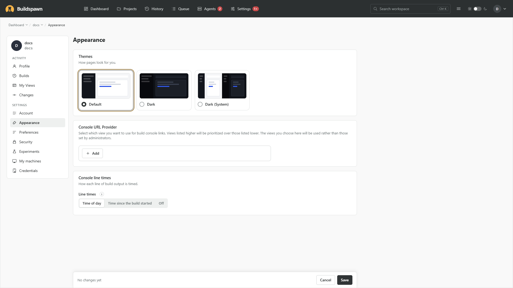

Appearance and themes
Change how Buildspawn looks for you and your team: the light or dark theme, shared icon colours and how build pages and consoles are shown.
There are two places to change the look:
| Page | Who | What it changes |
|---|---|---|
| Settings › Appearance | Administrators | The default theme for everybody, shared icon colours and server-wide display options. |
| Account menu › Appearance | Every user | Your own theme and console options. They win over the server defaults, for you only. |
Themes
Buildspawn has three themes:
| Theme | What it looks like |
|---|---|
| Default | The light theme: light pages with a dark side panel. |
| Dark | The dark theme: dark everywhere. Easier on the eyes in a dark room. |
| Dark (System) | Follows the operating system's light or dark setting, and switches when it does. |


Switch your own theme
The quickest way: click the sun / moon switch in the top bar. Your choice is saved with your account, so it follows you to other computers.
Or choose it on your own Appearance page:
- Click the account menu (the round button with your initial) and pick Appearance.
- Click a theme card: Default, Dark or Dark (System).
- Click Save.

Set the theme for everybody
- Open Settings › Appearance.
- Under Themes, click the theme new users should get.
- Leave Allow theme selection for each user on so people can still pick their own, or switch it off to use one theme for everybody.
- Click Save.
Settings › Appearance, every option
The page is called Appearance and says Configure the look and feel of Buildspawn. A Find plugins link at the top lists plugins that add more looks. Everything on the page applies to the whole server, in this order:
| Section and field | What it does |
|---|---|
| Themes: Default, Dark, Dark (System) | The theme people get until they pick their own. One card is selected. |
| Allow theme selection for each user | On: every user can pick a theme on their own Appearance page or with the switch in the top bar. Off: everybody gets the theme chosen above. |
| Icon colour favourites (Shared with everyone) | A table with the columns Name, Colour and Shown on light / on dark. These colours appear in the Favourites row of the icon colour swatch of every build configuration and project, for every user. Only administrators can change them. Click Add favourite to add a row, give it a name and pick a colour. Up to 24. Removing one does not change icons already coloured with it, because the colour is stored on the icon. |
| Colour check under the favourites | A colour that is too light for the light page, or too dark for the dark side panel, is shown adjusted there. The two columns show the colour on light and on dark, and a line under the table says which colour is used where, for example that a dark green is shown a little lighter in the project tree and on the dark theme. |
| Pipeline Stages: Show pipeline stages on job page, Show stage names by default, Show stage durations by default | Three switches for the stage view of build configurations that run in stages. Each can be left on its default or set here for everybody. |
| Pipeline Graph: Show pipeline graph on build page | Shows the graph of stages on the build page. |
| Prism syntax highlighting: Theme | The colour scheme for code shown in the browser, such as scripts. The default, PRISM, follows light and dark mode. |
| Console URL Provider | Which view opens when someone clicks a build console link. Providers higher in the list win. If none can show the link, the default is used. Click Add to add a provider and Delete to remove one. Users can override this on their own page. |
Click Save or Apply at the bottom. Apply saves and keeps you on the page.
The sign-in page
The sign-in page (from release 1.7) has the logo on the left and the form on the right, with faint branch lines behind. It follows the theme: light, dark, or your system's setting when the default theme is in use.
The resizable sidebar
From release 1.9 you can change the width of the left sidebar. Drag its right edge, anywhere from 200 pixels to half the window.
- Your width is remembered in your browser, so each person and each computer has its own.
- Double-click the edge to go back to the standard width.
- From the keyboard, press Tab until the edge is focused, then use the arrow keys. Hold Shift for bigger steps.
Your own console options
On your own Appearance page you can also set:
- Console URL Provider: your own choice of console view. It wins over the one the administrator set.
- Console line times: how the build console shows the time of each line: Clock (time of day), Elapsed (time since the build started) or Off. The Time control on the console page changes it too. See The build console.
Tips
- Screenshots for bug reports are easier to read in the light theme.
- Use Dark (System) if your computer switches to dark mode in the evening.
- Agree on a few icon colour favourites, for example one per platform, so the project tree is easy to scan.